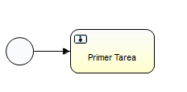

BPM Framework ++ - Business Platform - SDK for develop ria applications
Versión 0.6
Santiago Cotto
Diego Cibils
© GuruYu 2012
© CPAInnovation 2013
Componentes de la Arquitectura
Esquema general de Hawaii framework
Estructura y patrones de diseño
Mapeo de esquema MVC y clases de Hawaii Framework
Estructura y patrones de diseño
Integración HawaiiWeb & HawaiiCore
Base de datos H2 (Por defecto)
Configuración de registro histórico
Servidor de mails (James Server)
Manipulación de documentos Microsoft (Apache POI)
Módulo para cargar servicios de Hawaii
Implementación de ABMs automáticos (AbstractHawaiiContainer)
Iniciador del proceso configuracion
Como definir formulario en Hawaii
How to Publicar ABMs Automáticamente con REST
Crear un rest application dentro de una app en Guruyu
Exponer una entidad a modo ABM
Instalando la aplicación a partir del WAR
Hawaii es el nuevo proyecto de un BPM Framework+ de GuruYu. Se están estudiando las posibles opciones de motor BPM como Activiti o también jBPM5. Idealmente Hawaii debería ser agnóstico al motor de BPM, pudiéndose intercambiar entre distintos motores sin necesidad de refactorizar el código.
La premisa fundamental del proyecto es que el mismo permita desarrollar productos y soluciones ágilmente y en el menor tiempo posible, manteniendo la escalabilidad y robustez en todo momento.
El objetivo final es que un desarrollador pueda enfocarse en implementar la lógica de negocio de la solución en vez de enfocarse en los temas de tecnología inherentes a la plataforma. Estos deberían ya estar resueltos a la hora de encarar un nuevo proyecto que se base en Hawaii.
Las aplicaciones deberían poder construirse en su mayor parte con una herramienta visual (flujos del BPM, Interfaces web, etc) y luego ajustadas por un desarrollador cuando sea necesario.
Se buscará también tener un API bien definida, para interconectar la plataforma con sistemas externos fácilmente. Esto será realizado via Web Services.
Los componentes generales de la arquitectura son los siguientes:
Hawaii abstrae el problema de bpm y formulario enfrentándolo como algo único y genérico.
Al diseñar un workflow bpm se ingresan tareas, las cuales pueden o no tener formularios asociados. En caso de tenerlos, los mismos necesitan ser completados para poder terminar con la tarea y de esa manera continuar con el flujo del proceso, el objetivo de Hawaii es abstraer este problema y resolverlo una sola vez para el caso genérico ya que para todos los formularios y tareas el problema es el mismo, dejando al desarrollador prescindir del problema el cual ya está resuelto y verificado.
Los distintos componentes de Hawaii framework se detallan en las subsecciones siguientes.
Se implementó el core separado del resto de la aplicación, el conjunto del core junto con sus interfaces y fábricas puede verse como una aplicación independiente del resto de Hawaii, por lo que tienen sus propias características desde el punto de vista de diseño.
Para el desarrollo de la misma se utilizó el patrón de diseño MVC encapsulando el modelo de datos y los controladores de las interfaces, para que sea fácil poder cambiar los controladores o manejadores sin tener que alterar el resto del sistema, por ejemplo un cambio tecnológico, cambio de librerías, motor bpm, etc.
El uso del patrón factory nos provee también la habilidad de crear nuevos controladores para una misma interfaz teniendo un framework adaptable a varias situaciones, por ejemplo que soporte tanto activiti como jbpm.
Para su implementación y extensión se utiliza el patrón de diseño Model-View-Controller Pattern (MVC).
A continuación se presenta el diagrama de clases y se detalla a qué parte del esquema pertenece.
View
Controller
Model
Se utiliza un modelo propio de Hawaii siendo agnóstico al tipo de tareas o usuarios, o como estos interactúan con el sistema.
Para el pasaje de información entre HawaiiWeb y el HawaiiCore se utiliza este modelo, también puede ser utilizado para la publicación de servicios (ej. API)
En esta versión de HawaiiWeb se utiliza Vaadin como framework web. Vaadin está basado en GWT.
Referencia: https://vaadin.com/home
Para su implementación y extensión se utiliza el patrón de diseño Model-View-Presenter Pattern (MVP).
De esta manera se obtiene un elemento Presenter encargado de la lógica del formulario, el modelo de datos y la vista (view), esta última con los componentes visibles. De esta manera la capa View queda desacoplada del modelo, pudiendo cambiar el mismo sin afectar las vistas.
Referencia: http://en.wikipedia.org/wiki/Model%E2%80%93view%E2%80%93presenter
A continuación se detallan los componentes del diagrama:
Componente abstracto cuyas funciones son implementadas por el siguiente componente.
Implementación de HawaiiView
Componente encargado del manejo de la lógica e interacción del usuario. También es el único que conoce el Modelo de datos. Por otro lado es el encargado de implementar los eventos y delegar éstos a donde corresponda.
Se encarga de manejar los eventos producidos en el formulario web. Este es invocado por el Presenter para gestionar los eventos producidos en el fo No es un componente de hawaii sino que se implementan manejadores de eventos heredando de los mismos y implementando la lógica asociada, tal como se ilustra en la figura.
Se decidió separar el core del framework web y utilizar modelos de arquitectura diferentes para que éstos estén totalmente desacoplados por varios motivos.
Algunos de ellos son los siguientes:
Aplicación con Hawaii
Arquitectura (Ejemplo eNotificaciones)
Configurando la aplicación
Estilo:
Cada aplicación tiene su propio theme
Hawaii features
Se pueden buscar instancias de procesos para determinada variables global, esto sirve para identificar por ejemplo para un id de notificacion cual es la instancia de proceso asociada.
Una instancia de un proceso siempre es asociada a un elemento de la realidad, por ejemplo una notificación, un reclutamiento, una postulación, etc.
Estas instancias pueden tener variables de diferentes tipos, por ejemplo una instancia persistible o directamente un id autogenerado.
Múltiple tarea
<userTask id="reviewTask"
name="Review task ${loopCounter}"
activiti:assignee="${reviewer}">
<multiInstanceLoopCharacteristics isSequential="false">
<loopDataInputRef>reviewersList</loopDataInputRef>
<inputDataItem name="reviewer"/>
</ multiInstanceLoopCharacteristics>
</userTask>
Activiti y sus servicios se componen de los siguientes elementos.

Configurando la base de datos
Para activiti
Como punto de entrada tiene el archivo de configuración activiti.cfg.xml donde se deberá configurar la aplicación los siguientes parámetros.
Por defecto tiene estos valores
<?xml version="1.0" encoding="UTF-8"?>
<beans xmlns="http://www.springframework.org/schema/beans"
xmlns:xsi="http://www.w3.org/2001/XMLSchema-instance"
xsi:schemaLocation="http://www.springframework.org/schema/beans http://www.springframework.org/schema/beans/spring-beans.xsd">
<beanid="processEngineConfiguration" class="org.activiti.engine.impl.cfg.StandaloneProcessEngineConfiguration">
<property name="jdbcUrl" value="jdbc:h2:mem:vaadinactiviti;DB_CLOSE_DELAY=1000" />
<property name="jdbcDriver" value="org.h2.Driver" />
<property name="jdbcUsername" value="sa" />
<property name="jdbcPassword" value="" />
<property name="databaseSchemaUpdate" value="true" />
<property name="jobExecutorActivate" value="false" />
</bean>
</beans>
Las unicas lineas necesarias a cambiar son las siguientes, con el esquema creado “hawaiidb” usuario y pass respectivamente.
<property name="jdbcUrl" value="jdbc:mysql://localhost:3306/hawaiidb" />
<property name="jdbcDriver" value="com.mysql.jdbc.Driver" />
<property name="databaseSchemaUpdate" value="create-drop" />
Para que borre la base de datos cada vez que se levante.
<property name="databaseSchemaUpdate" value="true" />
Para que no borre la base de datos.
El registro de histórico sirve para obtener información sobre procesos ya finalizados, instancias de procesos finalizados y la información disponible según lo siguiente.
None — No history information is archived.
Activity — All process and activity instance information is archived.
Audit (default) — All process, activity instance, and form properties information is archived.
Full — The highest level of archiving; all audit information is archived and, additionally, the updates to process variables and user task form properties are stored.
En el archivo de configuración activiti.cfg lo configuramos, por ejemplo
<property name="history" value="full" />
Como crear y depurar una conexión a LDAP y utilizarla con Hawaii.
The Apache Directory Server project provides you with an LDAP server, an Eclipse
plugin to manage the LDAP server, and an LDAP client API framework.
Antes que nada hay que descargar el mismo desde
http://directory.apache.org/ e instalarlo siguiendo el wizard.
Para comprobar que este bien instalado se puede ir a http://localhost:10389/ y deberia de descargar un archivo.
Luego se necesita la herramienta de exploración, se instala un plugin para eclipse siguiendo los pasos del siguiente link.
http://directory.apache.org/studio/installation-in-eclipse.html
Por mas informacion ver Activiti in action, parte 3 capitulo 10.2
ahora se pueden crear usuarios y grupos.
Now you need to create a couple of users and groups that you’ll later use to test the
integration between the Activiti Engine and the ApacheDS LDAP server. Right-click
the ou=users entry and choose New > New Entry. In the wizard’s pop-up menu,
choose the “Create Entry from Scratch” option. In the list of object classes, choose the
inetOrgPerson class, which represents a user entry in the LDAP server. Then, choose
the user identifier to complete the creation of the new user.
you add a user with a unique identifier, uid, of “santiago”. When you click
Next, you’ll see the last page of the wizard, where you have to fill in the sn (surname) and cn (comlete name).
Deberia de quedar algo asi
Con esto podemos crear varios usuarios, grupos y asociarlos atributos a los mismos.
A continuación se presenta como acceder por código a esto.
Qué es, y cómo agregar una o varias bandejas en Hawaii?
Inbox
El inbox es básicamente una lista de cosas, por ejemplos una lista de tareas pendientes, tareas por asignar, tareas de histórico. El caso más común es el de lista de tareas pendientes, pero las aplicaciones por lo general desean tener sus propias listas y en general más de una y customizadas.
Atacando el problema abstractamente, generalizamos el inbox en lo siguiente para Hawaii.
Inbox Hawaii
Lista de Elementos (Tabla u otro Componente) donde cada “fila” tiene acciones (por lo menos una) que lleva a un formulario o ejecutar cierto código.
La cantidad de columnas debe ser customizable pero más importante aún, de donde se obtienen los elementos también debe ser customizable.
Siguiendo el patrón de diseño MVP y el uso del framework MVP4 de vaadin se realizó el siguiente esquema.
Los componentes en azul son propios de hawaii y son los que marcan las operaciones a sobreescribir, el desarrollador debe crear los componente NewInboxPresentent y NewInboxViewImp sobreescribiendo algunas operaciones detalladas a continuacion, Hawaii se encarga posteriormente a su definicion que publicar estos inbox y solo con definir cuales son los datos reuelve el comportamiento.
NewInboxPresent
Se utiliza el patron de diseno model view presenter, donde tenemos un present encargado de manejar la logica y un view impl encargado de desaplegarla en pantalla.
Las operaciones que debe implementar NewInboxPresent son:
protected abstract BeanItemContainer<?> getContainer();
Lo unico que debe hacer es crear el BeanContainer con los elementos y retornarlo, por ejemplo.
BeanItemContainer<TaskData> dataSource = new BeanItemContainer<TaskData>(TaskData.class);
dataSource.addAll(queryForTasksToShow());
En este caso la clase a mostrar es TaskData pero podría ser cualquier otra, en la operacion queryForTasksToShow es una operacion privada que retorna la lista de TaskData para este inbox.
NewInboxViewImp
Las operaciones a sobre escribir de acuerdo al inbox son son las siguientes
protected abstract Component continueTask(final TaskData task);
Operación encargada de implementar (o mostrar algo) cuando se ejecucta la accion de las tareas (en caso de haber) si se ejecuta la accion esta funcino es llamada con la tarea correspondiente, ya que cada inbox puede tener comportamiento diferentes de acuerdo a las acciones, por ejemplo un inbox de tarea puede querer ejecutarlas o llevarlas al formulario, sin enbargo otro tipo de inbox por ejemplo historico o reportes puede querer llevarlos a otro tipo de formularios o una URL externa, descarga de un archivo, etc.
Lo implementa es la funcion que se ejecuta al clickear la accion.
protected abstract String[] getVisibleColumns();
Para los objectos que se pasaron esta funcion indica cuales son los atributos que seran visibles, simplemente una lista de string con estos.
También como es un componente de Hawaii y utiliza un presenter debe implementar estas operaciones
public String getDisplayName(); //retorna el nombre a mostrar
public String getDescription(); //descripcion (opcional)
protected NewInboxPresenter createPresenter(); (crea el Present y lo retorna)
Una implementación de esta ultima puede ser
@Override
protected NewInboxPresent createPresenter() {
return new NewInboxPresent (this, getApplication());
}
PARA BORRAR SE MIGRÓ A UN NUEVO DOCUMENTO!!
James Server es un servidor de correo electrónico SMTP, POP3 y Noticias NNTP. Proyecto de la Apache Software Foundation100% hecho en Java, siendo un completo y portable motor de Email basado en los actuales protocolos de código abierto.
Web y Descarga
http://james.apache.org/server/
http://james.apache.org/download.cgi#Apache_James_2.3.2_is_the_stable_version
Instalación y configuración
Descargar archivo comprimido, ejecutar archivo run dentro de la carpeta bin
run.exe en windows
run.sh linux o mac
Para acceder al servidor nos conectamos por telnet a localhost:4555 con usuario y pass “root”
Se puede usar el programa putty para windows, y para linux desde linea de comandos
http://www.chiark.greenend.org.uk/~sgtatham/putty/download.html
tenemos varios comandos disponibles, el mas importante
addUser “usuario” “”pass”
y listUsers para listar todos los usuarios ingresados
An email task can be used to send an email based on the process variables available in the process instance. This task isn’t part of the BPMN 2.0 specification but is implemented as a service task with an Activiti-specific type definition. The graphical
representation shown in figure B.9, therefore, is the same as for a service task.
Se representa de la siguiente manera
En ese ejemplo se enviar 3 mails a distintos destinatarios, se pueden configurar practicamente todo los parametros, mas info
http://www.activiti.org/userguide/index.html#bpmnEmailTask
Mail server configuration
Property | Required? | Description |
mailServerHost | no | The hostname of your mail server (e.g. mail.mycorp.com). Default is localhost |
mailServerPort | yes, if not on the default port | The port for SMTP traffic on the mail server. The default is 25 |
mailServerDefaultFrom | no | The default e-mail address of the sender of e-mails, when none is provided by the user. By default this is activiti@activiti.org |
mailServerUsername | if applicable for your server | Some mail servers require credentials for sending e-mail. By default not set. |
mailServerPassword | if applicable for your server | Some mail servers require credentials for sending e-mail. By default not set. |
mailServerUseSSL | if applicable for your server | Some mail servers require ssl communication. By default set to false. |
Librerías necesarias para envio de mail
commons-email-1.2.jar
mail-1.4.1.jar
ambas vienen incluidas dentro de activiti.
Como enviar mail desde una cuenta de gmail
http://jira.codehaus.org/browse/ACT-1350
Como enviar emails utilizando james hacia una cuenta externa
http://stackoverflow.com/questions/1872287/problem-in-sending-external-mails-in-james-mail-server
Ref:
Página 406 de Activiti in Action
http://www.activiti.org/userguide/index.html#bpmnEmailTask
http://bpmn20inaction.blogspot.com/2010/11/using-activitis-email-task.html
Para mandar mails externamente hay que configurar James Server o utilizar directamente en activiti una cuenta (p.e de gmail)
Para ver como configurar james ir a la página oficial
http://wiki.apache.org/james/JamesQuickstart
Apache POI is a pure Java library for manipulating Microsoft Documents, for more information please see the project homepage.
http://poi.apache.org/download.html
Provee apis para las siguientes tecnologias
Component APIs
poi-3.9-20121203.jar
Hawaii provee unacomponentet Export con las siguientes funcionalidades divididas por clases.
Encapsulando la integración con la librería y el manejo de la misma.
Este componente se encarga de exportar un vector a un archivo Excel y guardarlo en el disco.
Este componente como única entrada recibe un vector y la dirección del archivo a crear, por lo que no depende de ningún componente visual (tabla, textbox, etc) idealmente su uso seria para la generación automática de archivos excel o exportación de contenido en dicho formato.
un vector es un conjunto de elementos (en este caso Strings) donde se representa una fila, cada columna se representa por la separacion de una “,”
public static SaveTableToExcel getInstance();
Componente singleton, primer funcion a llamar
public static void createCell(HSSFRow row, short i, String value,HSSFCellStyle style);
public void crearExcel(Vector v, String namesheet, String filename) throws Exception
Vector v = new Vector();
v.addAll(getRowsExport()); //getRowsExport() retorna lista de elementos {1,2,..}
try {
SaveTableToExcel.getInstance().crearExcel(v, null, basepath);
} catch (Exception e) {
e.printStackTrace();
}
En la dirección basepath queda el archivo generado
Ejemplo de un inbox generico exportado.
Definición:
This takes a Table as input and exports a decent Excel file containing the data in the Container. It also handles HierarchicalContainers and the resulting Excel file will have the categories and subcategories properly grouped/outlined.
TableExport es un proyecto open source para vaadin, donde Hawaii lo extiende y modifica su código, mejorando su uso y participando en el proyecto.
La idea del mismo es poder Exportar una tabla de vaadin en formatos (en principio Excel) pero puede ser extendida a varios, donde el usuario pueda descargar el Excel generado sin quedar el mismo en el servidor, con esto ultimo se puede ver la diferencia entre este y el anterior (SaveVectorToExcel)
Web Oficial del proyecto open source
Si bien Hawaii no lo utiliza como librería sino que incorpora su código con los cambios apropiados, en la pagina oficial y su correspondiente foro se encuentra información interesante sobre el componente.
http://code.google.com/p/tableexport-for-vaadin/
https://vaadin.com/directory#addon/tableexport (vaadin add on)
Cada aplicación construida en Hawaii puede o no querer utilizar ciertos servicios, (p.e exportar a Excel, Web Services, Pdf, Qr, etc) por lo tanto se construyó un módulo y su configuración para poder elegir que servicios utilizar en cada aplicación.
Esto aun no esta implementado.
SSL proporciona autenticación y privacidad de la información entre extremos sobre Internet mediante el uso de criptografía. Habitualmente, sólo el servidor es autenticado (es decir, se garantiza su identidad) mientras que el cliente se mantiene sin autenticar.
http://es.wikipedia.org/wiki/Transport_Layer_Security
Configuración
Para determinado usuario de tomcat, (p.e hawaiiuser)
Windows:
%JAVA_HOME%\bin\keytool -genkey -alias hawaiiuser-keyalg RSA
Unix:
$JAVA_HOME/bin/keytool -genkey -alias hawaiiuser -keyalg RSA
Se ingresan los datos en la consola, es importante el campo de password y password del usuario en tomcat.
El password del usuario en tomcat esta en el archivo tomcat-users
<user username="hawaiiuser " password="password" roles="tomcat"/>
El otro password (primer campo a ingresar) se tiene que setear junto con la direccion del archivo en
/conf/server.xml
<Connector SSLEnabled="true" acceptCount="100" clientAuth="false"
disableUploadTimeout="true" enableLookups="false" maxThreads="25"
port="8443" keystoreFile=".keystore" keystorePass="password"
protocol="org.apache.coyote.http11.Http11NioProtocol" scheme="https"
secure="true" sslProtocol="TLS" />
Con esto se accede a la pagina principal de tomcat en https://localhost:8443 y a las aplicaciones (p.e https://localhost:8443/eNotificaciones).
Al levantar el servidor en la consola (log) se debe mostrar el siguiente mensaje
INFO: Initializing ProtocolHandler ["http-nio-8443"], indicando que se a inicializado el protocolo en el puerto 8443.
Configurar aplicación para que siempre acceda por SSL
En el archivo web.xml
<security-constraint>
<web-resource-collection>
<web-resource-name>securedapp</web-resource-name>
<url-pattern>/*</url-pattern>
</web-resource-collection>
<user-data-constraint>
<transport-guarantee>CONFIDENTIAL</transport-guarantee>
</user-data-constraint>
</security-constraint>
Ref:
http://tomcat.apache.org/tomcat-7.0-doc/ssl-howto.html (importante)
http://blog.frankel.ch/ssl-your-tomcat-7
http://www.sslshopper.com/article-most-common-java-keytool-keystore-commands.html
http://java.dzone.com/articles/setting-ssl-tomcat-5-minutes
CAS is an authentication system originally created by Yale University to provide a trusted way for an application to authenticate a user
Jasig cas Página principal
http://www.jasig.org/cas/download
Instalacion
Descargar el cas-server e ir a la carpeta
modules/cas-server-webapp-<VERSION>.war,
e instalarlo en el servidor apache, simplemente ponerlo en la carpeta /webapps
Se puede chequear que este bien instalado yendo a la direccion
https://localhost:8443/cas-server-webapp-3.5.1/login
Ref:
Integración tomcat cas
http://tomcat.apache.org/tomcat-7.0-doc/realm-howto.html (importante)
Integración vaadin con cas
http://jasond-blog.blogspot.com/2011/05/spring-security-and-cas-integration.html
Ejemplo:
https://github.com/jasondevj/cas-integration-with-vaadin
Para la generación de gráficas se utiliza la librería JFreeChart
http://www.jfree.org/jfreechart/
Chat
http://www.igniterealtime.org/
Cliente
Spark
Exportar contenidos a diferentes formatos, contenidos visuales (que el usuario ve) por ejemplo formularios, tablas, páginas en general, pero también proveer una Api para que el desarrollador pueda exportar contenidos específicos.
Capa aplicación tiene sus propios inbox, creados extendiendo el componente de Hawaii, como se explica anteriormente.
Automáticamente al extender de la clase ya se obtienen los botones para exportar en la parte inferior
Toma el inbox que se compone de una tabla con por lo menos una columna de tipo generatedColumn que son las acciones disponibles para esta tarea.
http://tkgospodinov.com/category/poi/
HawaiiRest es una aplicación encargada de proveer servicios de hawaii con el formato Representational State Transfer (Rest).
Rest:
http://es.wikipedia.org/wiki/Representational_State_Transfer
Para la publicación de servicios de utiliza el framework restlet (http://www.restlet.org)
Un ABM es un formulario para altas, bajas y modificaciones de entidades.
Esta sección intentará explicar las herramientas que provee Hawaii para realizar ABMs, de forma de facilitar la tarea del desarrollador.
Como parte de las herramientas que provee Hawaii, la más importante en relación a los ABMs es el Administrador de ABM.
Este componente de Hawaii, que puede ser o no utilizado, es el encargado de manejar todos los ABM de acuerdo a la navegabilidad de Hawaii.
En el caso de que se utilice el Administrador de ABM para crear un ABM de una nueva entidad se deben realizar los siguientes pasos:
public String getDisplayName() {
return "Example";
}
@Override
public void initApp(Application ap) {
// Aquí se generaría el código para desplegar la pantalla.
}
Lo único que se debe realizar es retornar un nombre para desplegar en la pantalla del ABM.
Para definirlo basta con ingresar como clave el prefijo “abm” seguido de un nombre descriptivo único. Como valor se debe ingresar la clase donde se encuentra el mismo, por ejemplo abmExample1 = com.guruyu.project.example.ABMExample.
Importante: El nombre descriptivo debe estar declarado en las clases de manejo de ventanas de la aplicación.
Una vez realizados todos estos pasos el Administrador de ABM utiliza un módulo el cual lee este archivo y busca todos los prefijos y los define como pestañas de la interfaz de usuario, así como implementa las operaciones de click para abrir el componente e ingresarlo en el lugar adecuado (según la navegabilidad) utilizando reflection.
Con estos pasos se resuelve la integración de una nueva pestaña a la aplicación quedando pendiente la implementación del componente visual de la misma al desarrollador.
Como una mejora al Administrador de ABMs explicado en la sección anterior se creó la clase AbstractHawaiiContainer con la cual se crea un ABM en la aplicación de forma automática.
A continuación se muestra un ejemplo de como utilizar la misma, así como los pasos a seguir.
@Entity
public class Example implements Serializable {
@Id
@GeneratedValue(strategy=GenerationType.AUTO)
private String id;
private String nombre;
private String descripcion;
/* Incluir constructos, getters y setters */
}
/* Al extender de la clase AbstractHawaiiContainer que utiliza generics se debe pasar la entidad Example */
public class ExampleAbm extends AbstractHawaiiContainer<Example> {
/* Nombre que se desplegará en la pestaña del ABM */
@Override
public String getDisplayName() {
return "Example";
}
/* Retornar la clase de la entidad */
@Override
public Class<Example> getPojoClass() {
return Example.class;
}
/* Agregar los atributos que se desplegarán en el listado de los ABM */
@Override
public Object[] getVisibleColumn() {
String[] cols = new String[] { "nombre","descripcion" };
return cols ;
}
/* Agregar los atributos que se desplegarán en la pantalla de alta y/o edición */
@Override
public Collection<?> getVisibleProperties() {
List<String> li = new ArrayList<String>();
li.add("nombre");
return li;
}
}
<class>com.guruyu.project.pmo.abm.entidad.Accion</class>
<class>com.guruyu.project.pmo.abm.entidad.Example</class>
<class>com.guruyu.project.pmo.abm.entidad.ProyectoPrueba</class>
abmPMO3=com.guruyu.project.pmo.abm.component.TipoAtributoAbm
abmPMO4=com.guruyu.project.pmo.abm.component.ExampleAbm
abmPMO5=com.guruyu.project.pmo.abm.component.ProyectoPruebaAbm
Pantalla de listado de la entidad.
Pantalla de alta / edición de la entidad.
Inbox
El inbox es básicamente una lista de tareas, por ejemplos tareas pendientes, tareas por asignar, tareas de histórico, entre otros.
El caso más común es el de la lista de tareas pendientes, pero por lo general, cada sistema mantiene su propias listas, con sus propios formatos siendo éstas particulares de cada negocio.
Tomando en cuenta esta situación, el Inbox se generaliza en Hawaii como se explica en la siguiente sección.
Inbox Hawaii
Lista de Elementos (Tabla u otro Componente) donde cada “fila” tiene acciones (por lo menos una) que lleva a un formulario o ejecutar cierto código.
La cantidad de columnas debe ser customizable pero más importante aún, de donde se obtienen los elementos también debe ser customizable.
Siguiendo el patrón de diseño MVP y el uso del framework MVP4 de vaadin se realizó el siguiente esquema.
Los componentes en azul son propios de hawaii y son los que marcan las operaciones a sobreescribir, el desarrollador debe crear los componente NewInboxPresentent y NewInboxViewImp sobreescribiendo algunas operaciones detalladas a continuacion, Hawaii se encarga posteriormente a su definicion que publicar estos inbox y solo con definir cuales son los datos reuelve el comportamiento.
NewInboxPresent
Se utiliza el patron de diseno model view presenter, donde tenemos un present encargado de manejar la logica y un view impl encargado de desaplegarla en pantalla.
Las operaciones que debe implementar NewInboxPresent son:
protected abstract BeanItemContainer<?> getContainer();
Lo unico que debe hacer es crear el BeanContainer con los elementos y retornarlo, por ejemplo.
BeanItemContainer<TaskData> dataSource = new BeanItemContainer<TaskData>(TaskData.class);
dataSource.addAll(queryForTasksToShow());
En este caso la clase a mostrar es TaskData pero podría ser cualquier otra, en la operacion queryForTasksToShow es una operacion privada que retorna la lista de TaskData para este inbox.
NewInboxViewImp
Las operaciones a sobre escribir de acuerdo al inbox son son las siguientes
protected abstract Component continueTask(final TaskData task);
Operación encargada de implementar (o mostrar algo) cuando se ejecucta la accion de las tareas (en caso de haber) si se ejecuta la accion esta funcino es llamada con la tarea correspondiente, ya que cada inbox puede tener comportamiento diferentes de acuerdo a las acciones, por ejemplo un inbox de tarea puede querer ejecutarlas o llevarlas al formulario, sin enbargo otro tipo de inbox por ejemplo historico o reportes puede querer llevarlos a otro tipo de formularios o una URL externa, descarga de un archivo, etc.
Lo implementa es la funcion que se ejecuta al clickear la accion.
protected abstract String[] getVisibleColumns();
Para los objectos que se pasaron esta funcion indica cuales son los atributos que seran visibles, simplemente una lista de string con estos.
También como es un componente de Hawaii y utiliza un presenter debe implementar estas operaciones
public String getDisplayName(); //retorna el nombre a mostrar
public String getDescription(); //descripcion (opcional)
protected NewInboxPresenter createPresenter(); (crea el Present y lo retorna)
Una implementación de esta ultima puede ser
@Override
protected NewInboxPresent createPresenter() {
return new NewInboxPresent (this, getApplication());
}
Hawaii soporta envio de mails sincrónicos y asincrónicos, se recomienda por buenas practicas utilizar el segundo.
Uso: Se recomienda siempre
Funcionamiento:
Hawaii mantiene en la base de datos 2 tablas “HAW_RUN_MAIL” y “HAW_HIS_MAIL”, en la primera se encuentran los mails a enviar y en la segunda los mails enviados.
Para enviar un mails basta con guardar un elemento en la primer tabla, ejemplo de codigo
EmailToSend email = new EmailToSend();
email.setAsunto("Notificacion");
email.setTo(alguien@cpainnovation.com.uy);
email.setHtml(true); //false si el texto es plano
email.setContenido("Contenido con html”);
IController iC = JpaController();
IC.create(email);
Obs: No olvidar tener habilitado el cron de envio de mails, en el archivo hawiaii.properties tienen que estar estas propiedades
cronEnable = true
Uso: No se recomienda porque detiene la aplicacion y el usuario tiene que esperar que los servidores involucrados se comuniquen, pero puede ser util cuando no se debe continuar hasta que el mail este confirmado, si se quiere dejar en el registro que se mando este mail hay que indicarlo explicitamente generando una entrada en “HAW_HIS_MAIL”, ejemplo de codigo.
Email email = new Email();
email.setFromAddress(fromnick, frommail);
email.setSubject(dataEmail.getAsunto());
email.addRecipient(“nombre”, “email”], RecipientType.TO);
if (quieroHtml) {
email.setTextHTML(dataEmail.getContenido());
} else {
email.setText(dataEmail.getContenido());
}
TransportStrategy = transportStrategy.equals("SMTP_TLS");//para gmail u otros
new Mailer(host,port, userMain, pass,tranport).sendMail(email);
En el archivo mail-conf.properties se encuentra la configuracion del mail
Ejemplo:
host = smtp.gmail.com
userMain = vaca.guruyu@gmail.com
pass = ****
port=587
from = vaca.guruyu@gmail.com
TransportStrategy = SMTP_TLS
formAddresNick = CPA-TAX
formAddresMail = noreply@cpa-tax.com
<startEvent id="request" activiti:initiator="initiator" />
http://forums.activiti.org/en/viewtopic.php?f=6&t=3999
Autorizacion de comienzo del proceso en activiti
en el xml se tiene que poner lo siguiente, una extensión al process
<process id="potentialStarter">
<extensionElements>
<activiti:potentialStarter>
<resourceAssignmentExpression>
<formalExpression>group2, group(group3), user(user3)</formalExpression>
</resourceAssignmentExpression>
</activiti:potentialStarter>
</extensionElements>
<startEvent id="theStart"/>
group(nombre_grupo) user(nombre_usuario)
http://activiti.org/userguide/index.html#security
Para obtener los procesos que pueden ser inicializados por un usuario
processDefinitions = repositoryService.createProcessDefinitionQuery().startableByUser("userxxx").list();
Como agregar un dorm type a Hawaii
Agregando un form type a activiti
1) Create a new type that extends AbstractFormType and implement it as you want
2) Obtain theprocess engine configuration and tweak it as described in step 3
3) Do processEngineConfiguration.getFormTypes().add(new MyCustomFormType())
http://docs.codehaus.org/display/ACT/How+to+add+a+new+FormType
http://forums.activiti.org/en/viewtopic.php?f=6&t=880
Los formularios se definen cuando se construye el flujo del proceso, a continuación para cada tipo de datos se especifica como se lo indica en el diseñador, como queda en el xml generado y como Hawaii lo despliega.
Los formularios en Hawaii se definen de forma tal que el primer formulario se encuentra al iniciar el proceso, por lo que para poder comenzar el proceso se tiene que definir un formulario (puede estar vacío).
A continuación se muestra un ejemplo:

Este proceso simple implica que primero se creó el proceso y se ingresararon ciertos datos y luego se creó la “Primer Tarea” pudiendo ingresar otros datos, por lo tanto
Hay 2 tipos de formularios, de comienzo del proceso y para las tareas humanas.
Para ingresar datos sobre la tarea o comienzo del proceso se selecciona y se despliega la perspectiva de activiti.
El Nombre es lo que Hawaii va a ingresar como titulo una vez creado el formualario.
Para cada propiedad ingresada en el formualrio se dispone de las siguientes opciones, las mas importantes son
id - con este se lo identifica en las siguientes tareas que quieran ver esta informacion
Nombre - nombre deplegado en el formulario (visible)
Value - valor por defecto puede estar vacio
Readable - si es de lectura
Writeable - escritura
Requeried - si es requerido, Hawaii mostrara un mensaje de error si es requerido pero no ingresado.
Type - el que se detalla a continuacion
Type = string
Ejemplo
Nombre = proyecto
Type = String
Type = boolean
Hay 2 maneras de utilizar el tipo “boolean” una es no utilizar los formValues y la informacion se despliega como un checkBox con el nombre del componente o utilizando los formValues donde se muestra como una lista de OptionBox
FormValues:
Habilitado
No Habilitado
Type = enum
Aca en los FormValues se pueden indicar tantos como se quiera, y el usuario podra selecciona uno
Type = date
Para este campo se puede indicar el DatePaterns indicando el formato de la fecha a utilizar.
Type = textarea
Igual al primero pero el cuadro de texto es mas grande
Se puede ver la diferencia
Type = richtextarea
TextArea enriquecido pudiendo poner el texto en negrita, tamaño, etc guardando los valores como Html

Type = user
Tipos para seleccionar usuarios
Type = formLoop
Consiste en definir un loop en el formulario, por ejemplo cuando se quieren ingresar varias cosas de un mismo formulario
Ingresar cotizaciones
Se define lo que es una cotizacion;
Servicio de tipo string
Costo de tipo string
y se ingresa el tipo formLoop y el mismo muestra una tabla y un boton de agregar, agrega por json los elementos Lista de lista de string’s.
Tipo EntityUser
<activiti:formProperty id="pNomEntrevistador" name="Nombre Entrevistador :" type="enum" writable="false">
<activiti:value id="type" name="user"></activiti:value>
<activiti:value id="group" name="Entrevistador_Tecnico"></activiti:value>
<activiti:value id="ui" name="ComboBox"></activiti:value>
</activiti:formProperty>
La Transferencia de Estado Representacional (Representational State Transfer) o REST es una técnica de arquitectura software para sistemashipermedia distribuidos como la World Wide Web.
Hawaii ofrece servicios de forma generica en la direccion host/api/hawaii.. por ejemplo /api/hawaii/inbox/userId se obtiene la bandeja de entrada.
Tambien las aplicaciones pueden querer ofrecer servicios (TAX p.e), para esto se desarrollo un mecanismo para facilitar la construccion y automatizar las operaciones crud.
Tecnología
Framework rest
Restlet
-Es el mejor, es orientado a recursos como funciona la web. Simple y liviano.
-Mas amplio soporte que su alternativa, soporta android, GAE, JEE, JSE, Odata, OSGI, GWT, JS, etc..
-Alternativa conocida jenkins
Mapper
Jackson mapper, mapeador de Pojos (Representations mas presisamente) a Json y al reves..
Protocolos y Formatos
HTTP - Odata
Json
Estandar
GET (obtener elementos, parametros por url)
PUT (actualizar un elemento (NO crear)
DELETE (borrar un elemento)
POST (crear un elemento)
Por mas informacion
http://www.w3.org/2001/sw/wiki/REST
Con esto la app puede publicar servicios.
public class SampleApplication extends HawaiiApplication{
@Override
public synchronized Restlet createInboundRoot() {
Router router = (Router) super.createInboundRoot();
}
}
y la agregamos al web.xml para un determina filter
Teniendo la entidad creada lo unico que hacemos es una clase y la agregamos al router (p.e TipoServicio)
public class TipoServicioResource extends HawaiiRest<TipoServicio> {
@Override
protected Class<TipoServicio> getClazz() {
return TipoServicio.class;
}
}
y la agregamos al router.
router.attach("/tipoServicio",TipoServicioResource.class);
Extendiendo la clase del punto anterior se puede dar la lógica de negocio que se quiera.
Agregar capacidad para aplicar filtros en las busquedas para los abm automaticos
Propiedades y configuración de GuruYU
Acá se configura el acceso a la base de datos para los 2 orm’s utilizados (mybatis, eclipselink)
Se especifican las clases que serán persistidas o actualizadas por la implementación de JPA, actualmente eclipselink.
También se especifica si se crean, actualizan, eliminan y crean las tablas
Configuración smtp del mail serving
Configuración de acceso a ldap
Aca se cargan las vistas propias de cada aplicación, por ejemplo si el sistema de PMO tiene una ‘página’ con cierta información que se desea mostrar en el menú.
Se especifica el viewId y la clase que lo precede
las clases tienen que implementar la interfaz HawaiiView
Agregar aplicaciones a Guruyu BP
Def:
Llamamos aplicación a un conjunto de procesos y tareas, entidades de negocio con sus respectivos ABM específicos y opcionalmente páginas particulares.
Además de incluir el jar de cada aplicación se deben tocar ciertas propiedades.
Persistence.xml
En el archivo persistence.xml se encuentran todas las clases a ser persistidas.
Cuando se agrega un jar al servidor se tienen que agregar las clases al persistence.xml.
hawaii.properties
Además de propiedades generales en hawaii.properties se encuentran la lista de abm con sus respectivos prefijos por aplicación.
abmHR1 = com.guruyu...
abmHR2 = com.guruyu...
…
abmFac1 = com.guruyu...
Estos ABM tienen que implementar la interfaz IHawaiiABM.
menu-top.properties
Propiedades del top de la pagina, por ejemplo para el menu de administracion.
En este caso utilizamo el prrefijo usado en hawaii.properties
abm1 = abmHR,HR,Administracion HR, HR_SUPERVISOR
los parametros van separados por coma
parámetro 1: prefijo a buscar en el archivo hawaii.properties.
parametro 2: nombre a incluir en el menu.
parámetro 3: nombre a incluir como titulo de la pagina.
parámetro 4: rol que puede ver o acceder a este ABM.
menu-left.properties
Propiedades para agregar links a paginas en el menu lateral
view1 = AudRepostesViewId, com.guruyu..., AUD_VISTA_..
Primer parametro el ViewId cargado en el archivo view.properties y el segundo parametro la clase que implementa la vista, y por ultimo el rol que puede verla.
La clase debe implementar la interfaz HawaiiView.
view.properties
Lista de View Componentes a ser cargados al inicio de la aplicacion.
Si en la aplicacion se usa una pagina particular la misma debe ser cargada en este archivo
view1 = AudRepostesViewId, com.guruyu...
Todas las propiedades anteriores pueden incluirse en una tabla en la base de datos, exceptuando por consistencia el archivo persistence.xml
(TODO List)
Instalación GuruYu - Server 2008
Paso1:
Descargar Java JDK 1.7 desde la web oficial
Si la maquina lo soporta, descargar version de 64 bits.
La instalación es simple, simplemente darle al “continuar”
Paso 2:
Configurar JAVA_HOME y PATH variables de entonrno en windows.
JAVA_HOME apunta a la carpeta donde esta java instalado
Ir a “Computer” , “System Properties”
Dentro de opciones avanzadas

En la sección de las Variables del sistema haremos clic sobre el botón Nueva, esto nos abrirá un pequeño cuadro de diálogo donde agregaremos los siguientes valores:
* Nombre: JAVA_HOME
* Valor: la ubicación donde hayas instalado el JDK, en mi caso C:\...\Java\jdk1.7.0_21 y hacer clic en Aceptar.

Path
Buscar la varibla de sistema llamada Path y hacer clic en Modificar.
En el campo Valor de variable de la ventana de diálogo Modificar variable de sistema agregaremos nuestra nueva variable de entorno al final del valor existente separándolo por un punto y coma (;) de la siguiente forma: ;%JAVA_HOME%\bin;
TOMCAT SERVLET
Paso1:
Primer paso descargar tomcat desde web oficial (version para windows) que viene con el archivo services.bat
http://tomcat.apache.org/download-70.cgi
Paso2: (Configuracion)
En tomcat/conf crear un usuario para tomcat con acceso al tomcat managment
<user username="tomcat" password="tomcat" roles="admin,manager-gui"/>
En este caso se crea un usuario tomcat con el pass tomcat y se le da el acceso al “manager-gui” esto último es importante, para tener control sobre la memoria que esta gastanto y poder recargar aplicaciones o reiniciar.
Dentro de tomcat/conf configuramos para que la aplicacion arranque en el puerto 80 en vez del 8080 asi todas las llamadas van por http sin tener problemas de firewall, etc.
<Connector connectionTimeout="20000" port="8080" protocol="HTTP/1.1" redirectPort="8443"/>
En esta parte cambiamos el 8080 por 80. (importante)
Instalar tomcat como servicio o arranque automatico
Alternativa 1:
ir a tomcat/bin y abrir una terminal y ejecutar
service.bat install
Iniciar el servicio
entrar a services.msc y configurarlo para que comience automáticamente al iniciar el sistema
Alternativa 2:
Alternativa a la instalación de tomcat como servicio
Una alternativa válida en vez de instalarlo como servicio (si hay algún problema) es instalarlo como aplicación y en el Task Scheduler de windows crear una nueva tarea (“Create basic task”) que inicie la aplicación una vez que se inicia el sistema.
Antes que nada hay que verificar que la aplicación este “apuntando” a una base de datos correcta, para esto se abre el war con (p.e 7zip) y se descarga el archivo /WEB-INF/classes/db.properties
En este archivo esta configurada la base de datos, si la queremos cambiar la misma hay que volver a ingresar el archivo modificado al war.
Antes de iniciar el servidor ingresar el war en la carpeta tomcat/webapps
iniciar el servidor.
ir a http://localhost/nombredelwar
o ingresar al management en
http://localhost
Observaciones finales:
AL iniciar el sistema va a detectar si existen tablas no creadas aún en la base de datos y las va a crear, la primera vez si la base esta vacia esta debería de crear todas las tablas.
Si existe un error en la conexión a la base de datos la aplicación no va a arrancar mostrando el error correspondiente en consola.
SO
Guruyu requires Java Servlet API 2.3 but also supports later versions and should work with any Java application server that conforms to the standard. The following application servers are supported:
GuruYu supports JSR-168 and JSR-286 Portlet specifications. All portals that implement either of the portlet specifications should work. The following portals are supported:
GuruYu also supports Google App Engine.
browsers:
GuruYU Web supports the built-in browsers in the following mobile operating systems:
DataBases
Listed below are the types (case sensitive!) that Guruyu uses to refer to databases.
Table 3.1. Supported databases
Activiti database type | Versions tested | Example JDBC URL | Notes |
h2 | 1.3.168 | jdbc:h2:tcp://localhost/activiti | Default configured database |
mysql | 5.1.21 | jdbc:mysql://localhost:3306/activiti?autoReconnect=true | Tested using mysql-connector-java database driver |
oracle | 11.2.0.1.0 | jdbc:oracle:thin:@localhost:1521:xe |
|
postgres | 8.1 | jdbc:postgresql://localhost:5432/activiti |
|
db2 | DB2 10.1 using db2jcc4 | jdbc:db2://localhost:50000/activiti |
|
mssql | 2008 using sqljdbc4 | jdbc:sqlserver://localhost:1433/activiti |
[a]
[b]
[c]
[d]
[a]Ricardo Zengin:
Merkur se escribe con K. mediante Merkur no solo accederían los browser mobile, sino tambien los navevgadores de escritorio para ciegos, las cajas de televisión terrestre digital y cualquier otro dispositivo que no fuera un browser común desktop.
[b]Ricardo Zengin:
El framework debe contemplar tambien todo lo relativo a BAM, Single Sign On, Integración LDAP y lo de la aplicación inbox independiente, como hablamos en el proyecto de FING
santiago.cotto:
ok, todavia quedan algunas cosas por investigar con respecto a la sesion, activiti cdi, spring transaction, ver si son nesesarias, lo del inbox independiente si, esta pensado para que sea distribuible facilmente teniendo el core publicando servicios, o como en el PIS accediendo a la misma base, las 2 opciones estaran contempladas
[c]Ricardo Zengin:
De la introducción no me queda claro que es core y que es el resto.
santiago.cotto:
ok, luego lo explico mejor, el core es nucleo de hawaii, asi como jbpm y activiti tienen un core que encapsula el acceso al motor, nosotros tenemos uno propio y agnostico a la tecnologia, nuestro core se encarga de todo lo relacionado al motor y/o manejo de usuarios. el resto es lo referente al Model y VIew, el modelo de datos y las vistas, el modelo de datos tambien es propio de hawaii asi poedmos publcar servicios con el mismo modelo de forma facil sin depender de ninguna tecnologia. Esta pensado para que esten separado asi el framework no queda atado a ser usado solo con vaadin o activiti.
[d]Ricardo Zengin:
Hay que incluir en la lista de componentes de la arquitectura los elementos necesarios para implementar lo explicado en el comentario anterior.